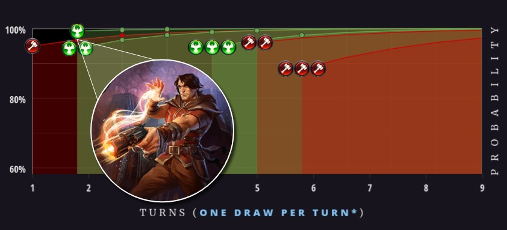

Let's take a look at their power bases using the Eternal Power Calculator:

Tobboo piloted Rakano Valkyries to a first place finish at RNG's Eternal Tournament Series S3W3, showcasing a new breed of Midrange
It is no secret that Icaria the LIberator wins games but...although she is in Rakano colors, she has most typically been played as a build-around finisher in 3 color Control decks that splash
A pure and proactive
That appears to be changing now with with some help from a Crest and a Gunslinger Mage. 
Anticipation for the Crest of Glory has been on-going since Crests were first introduced during The Dusk Road, and with the release of Fall of Argenport they are finally here. Not suprisingly a full set is included in Toboo's list.
But it is an unsung 2-cost unit that has unexpectedly made big Icaria even more playable. Not only does Bulletshaper immediately provide much needed
Bulletshaper x4 is a big part of the reason why Tobboo's total number for
While Rakano has been more typically associated with aggressive lists that get the job done with warcry and weapons. That has changed with a couple of new Power Base tools introduced with the Fall of Argenport, carving out a midranged niche for 2F Rakano decks to convincingly occupy.

While Tobbo’s Rakano Valkyries might showcase a new midrange archetype for a faction pair typically associated with more aggressive decks, Isochron’s Adapted Green Feln presents a fresh take on a classic Control-oriented approach.
What stands out on the Influence Chart are percentages dipping to 64 for PPP, and 59 for PPPP. Numbers this low would be very inadvisable in nearly any aggressive or midrange deck, but a control build like this one can afford it thanks to an abundance of filtering and card draw.
Although Tobbo has chosen to include only one additional Power Card beyond the minimum of 25, Adapted Green Feln features no less than 14 card draw effects, including Seek Power. Assuming Tobbo is able to play at least two of these before Turn 7, his chances of drawing enough Influence to play Channel the Tempest on curve approach a more comfortable 80%. (See columns 10-12 on the chart, representing 10-12 draws beyond the opening hand when going first).
The same can be said for Jotun Feast-Caller (PPP). While PPPP is among the most expensive Influence costs in Eternal, the Power Odds table shows us that hitting 8 Power can be even more difficult. The chances of drawing enough Influence and Power to play Channel the Tempest do not even become remotely favorable until after 14 draws. The same can be said for Sword of the Sky King.
These examples illustrate why card draw is so important to decks that rely on 8-cost cards as a their win conditions.
At the same time, Tobbo has also included plenty of filtering: every available crest within JPS is featured, along with 3x Cull the Deck 2x Strategize. In addition to mitigating power flood, this allows him to pass up any cards which may be too expensive to play in the early game.
Much of this filtering does come at a price: 12 Undepleted Power Sources in the form of Crests.
 Mind Over Body
Mind Over BodyNishava still has plenty of options even without them.
Crownwatch Paladin (
The chart shows us that the odds of drawing enough Influence to play either of these units on curve are in Nishava's favor:
 Note that the chances of playing Crownwatch Paladin are slightly better than for Awakened Student, and the Power Odds Table tells us why.
Note that the chances of playing Crownwatch Paladin are slightly better than for Awakened Student, and the Power Odds Table tells us why.To play Awakened Student you need to draw at least two Power and also two different Influence sources: both

Although Crownwatch Paladin requires the same amount of Power as Awakened Student - her Influence cost is less demanding, at a single

The exception is Teacher of Humility, a powerful 2-cost
The odds of drawing enough Influence to play Teacher on curve trail behind the other 1 and 2-cost units by as much as 22%.
Although this is a sizable gap, it makes sense because there are three times as many units requiring at least a single Justice influence.
Teacher of Humility is an especially valuable tool in matchups where your opponent relies on a lot of extra card draw. But she doesn't necessarily need to be played on Turn 2 in order to be effective for this deck's aggressive strategy. In this case, it is more important to make sure you have the resources needed to take an early lead in controlling the board.